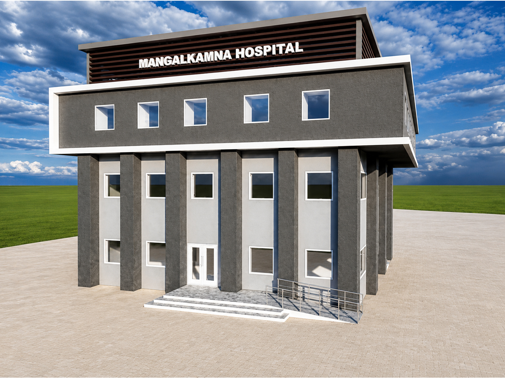
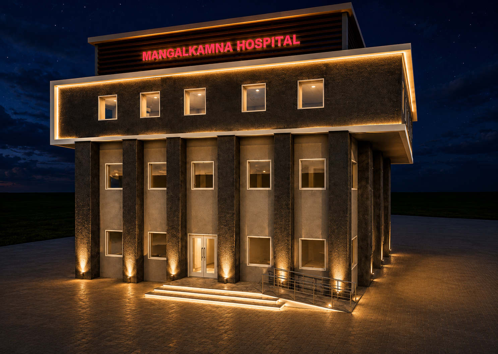
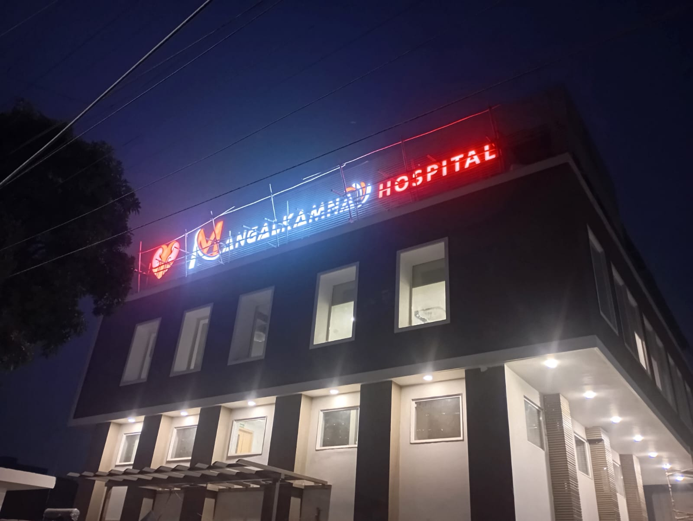
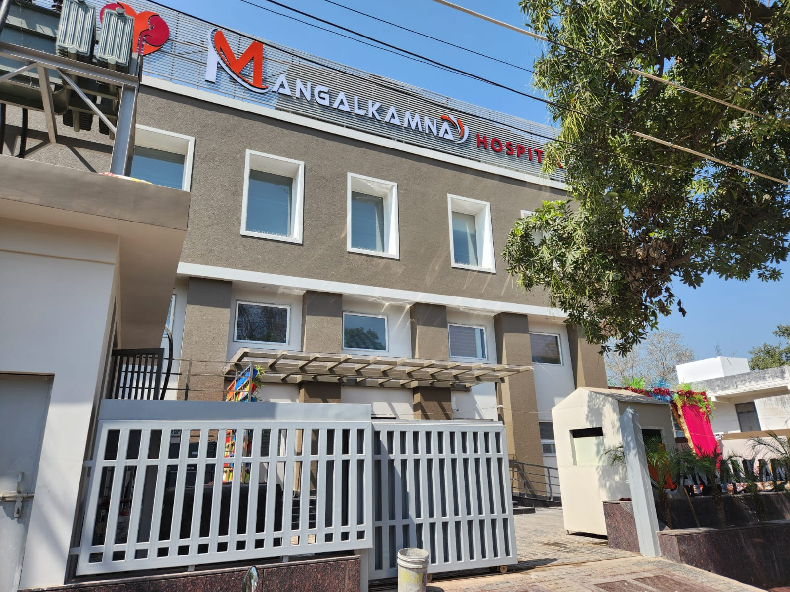

Contemporary Facade Redesign
Mangal Kamna Hospital is a kidney and urology healthcare facility located in Khandari, Agra.
THE URBAN CANVAS was engaged for the front elevation design, with the objective of developing a contemporary architectural identity for the existing hospital building.
The facade redesign focuses on clean horizontal and vertical articulation while strengthening the visual identity of the entrance.
The scope of THE URBAN CANVAS was focused on the front elevation redesign of the hospital.
The intervention sought to give the existing healthcare building a cleaner, more contemporary facade while creating a stronger and more identifiable entrance.



The facade redesign establishes a contemporary architectural language through a balanced combination of horizontal and vertical articulation.
The entrance is given greater visual emphasis, creating a clearer identity for the healthcare facility while maintaining a composed overall facade.
The resulting elevation gives the existing hospital a refreshed contemporary character while retaining its functional identity as a kidney and urology healthcare facility.